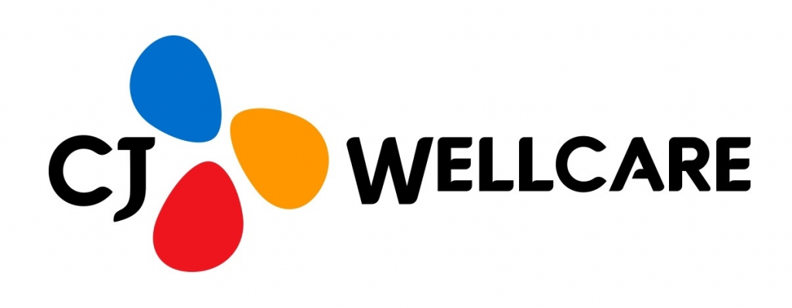
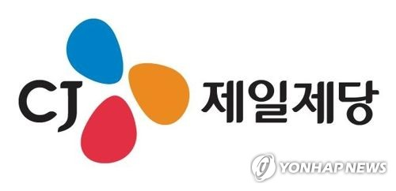

CJ웰케어 CJ Wellcare
CJ제일제당 건기식 사업부문이 분사한 헬스케어 전문기업
최종 업데이트

CJ웰케어는 어떤 브랜드인가
CJ웰케어는 CJ제일제당의 건강기능식품 사업부문이 물적분할되어 설립됐다. CJ제일제당이 보유한 발효·미생물 기술력을 기반으로 프로바이오틱스, 이너뷰티 등 건기식 제품을 개발해왔다.
식품 대기업의 연구개발 역량을 건강기능식품이라는 독립 사업으로 재편해 시장 대응력을 높이려는 목적으로 분사가 이뤄졌다. 분사 이후 자체 브랜드를 통해 소비자 직접 채널과 온라인 유통을 확대하고 있다.
CJ웰케어의 브랜드 아이덴티티는 무엇인가
식품 대기업의 발효·미생물 기술 자산을 건기식 전문 자회사로 재편해 시장 대응 속도를 높인 것이 특징이다. 계열사 분사를 통한 사업 전문화 전략을 취했다.
핵심 기술 자산 기반 카테고리 특화와 계열사 분사를 통한 사업 전문화
CJ웰케어 연혁 — 주요 사건은 언제였나
CJ웰케어 로고는 어떻게 변해왔나

대표 로고 1보관 이미지 1자주 묻는 질문
CJ웰케어는 어떤 산업의 브랜드인가요?
CJ웰케어는 헬스·제약 분야의 브랜드입니다.
CJ웰케어의 브랜드 아이덴티티는 무엇인가요?
식품 대기업의 발효·미생물 기술 자산을 건기식 전문 자회사로 재편해 시장 대응 속도를 높인 것이 특징이다.
CJ웰케어의 공식 웹사이트는 어디인가요?
CJ웰케어의 공식 웹사이트는 https://www.cjwellcare.com 입니다.
출처와 검증
CJ웰케어 관련 참고: 공식 웹사이트. 브랜드명은 한글과 원어를 함께 표기하되 데이터에 없는 표기는 만들지 않습니다. 기원 국가·설립연도는 검수된 정의문에서 확인된 값을 우선하고, 없을 때만 공식 웹사이트 URL이 일치하는 위키데이터 개체의 값을 씁니다.